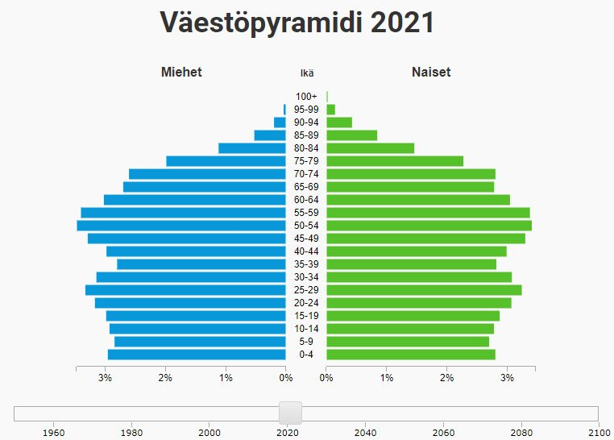

Tanska on eteläisin Pohjoismaa. Tanskaan kuuluu suuri Jyllannin niemimaa ja sen itäpuolella sijaitsevien saarien ryhmä. Saaria on noin 500, joista 79 on asuttuja. Sjælland, Fyn, Lolland, Falster ja Bornholm ovat saarista suurimmat ja tunnetuimmat. Tanskalla on rantaviivaa joka ilmansuuntaan, ja maaraja sillä on vain etelässä Saksan kanssa. Sijainti tekee Tanskasta linkin Manner-Euroopan ja Pohjoismaiden välille. Färsaaret ja Grönlanti kuuluvat myös Tanskan kuningaskuntaan, mutta molemmilla niistä on sisäinen itsehallinto. Tanskassa on rannikkoilmasto viileine kesineen ja leutoine talvineen. Sadetta saadaan ympäri vuoden. Maa on erittäin tasainen. Tanskan korkein kohta on vain 147 metriä merenpinnan yläpuolella. Tanska on yksi Euroopan tiheimmin asutuista maista. 30 % tanskalaisista asuu pääkaupunki Kööpenhaminan alueella.
Viikinkiajan (700–1000) alussa ei ollut vielä olemassa yhtenäistä Tanskaa, mutta 800-luvulla kuningas Godfred yhdisti tanskalaisheimot torjumaan Kaarle Suuren frankkivaltakunnan laajentumista. Kuningas Harald Sinihammas vakiinnutti maahan kristinuskon 900-luvun lopulla ja yhdisti Tanskan ja Norjan yhdeksi kuningaskunnaksi. 1000-luvulla Tanskan alaisuudessa olivat myös Etelä-Ruotsi, Pohjois-Saksa ja Englanti. Itämeren alueen voimakkain valtio Tanska oli 1100–1200, jolloin siihen kuului myös Viro. Saksalaisten Hansaliiton uhatessa Tanskan asemaa Itämerellä. Tanska, siihen kuulunut Norja sekä Ruotsi solmivat 1300-luvun lopulla Kalmarin unionin, jossa mailla oli yhteinen kuningas. Unioni Ruotsin kanssa purkautui lopullisesti 1500-luvulla.
Tanska menetti maa-alueitaan Ruotsille sodissa: 1600-luvulla Etelä-Ruotsin ja Itämeren saaria, 1800-luvulla Norjan. Islanti, Grönlanti, ja Färsaaret jäivät edelleen Tanskalle. Vuonna 1864 Tanska menetti useita herttuakuntia Saksalle maiden välisessä sodassa. Ensimmäisessä maailmansodassa Tanska oli puolueeton, mutta toisen maailmansodan aikana saksalaiset miehittivät maata Saksan antautumiseen, vuoteen 1945 saakka.
Tanska oli suhteellisen voimakas 1500- ja 1600-luvuilla. Sen talous hyötyi kahdeksankymmenvuotisesta sodasta, koska Alankomaista saapui paljon ammattitaitoisia pakolaisia. Tanska kuului kolmikymmenvuotisen sodan häviäjiin, koska Kristian IV arvioi väärin voimansa hyökätessään Saksaan. Ruotsi hyökkäsi vuonna 1643 Lennart Torstenssonin johdolla Tanskaan, mikä johti Tanskan kannalta epäedulliseen Brömsebron rauhaan. Siinä Tanska joutui luovuttamaan Ruotsille Jämtlandin, Härjedalenin, Hallandin, Gotlannin ja Saarenmaan.
Vuonna 1658 Tanska kävi toisen tappiollisen sodan Ruotsia vastaan. Roskilden rauhan tuloksena Tanska luovutti Ruotsille Skånen, Blekingen, Bornholmin saaren sekä Bohusin ja Trondheimin läänit. Tämän jälkeen käytiin vielä sota, jossa Ruotsi yritti valloittaa Tanskan kokonaan, mutta tämä hanke epäonnistui. Vuonna 1660 Kööpenhaminassa solmitussa rauhansopimuksessa Tanska sai takaisin Trondheimin läänin ja Bornholmin saaren.